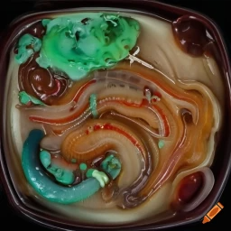

Slithering Slime Surprise

Description
Prepare to embark on a culinary adventure like no other with the enigmatic
"Slithering Slime Surprise." This beguiling dish weaves together an array
of extraordinary ingredients that push the boundaries of both taste and
imagination. Picture a tantalizing fusion of fresh earthworms, washed and
drained to perfection, lending an earthy essence that dances on the edge
of bizarre and captivating.
But the intrigue doesn't stop there. Brace yourself for the inclusion of
snail mucus, painstakingly harvested from organic snails, to bring a
slippery and slimy texture that both repulses and entices. As each bite
unfolds, the unmistakable essence of Sasquatch's toenail clippings
emerges, delivering an intriguing muskiness that defies expectations.
Together, these ingredients unite to create the Slithering Slime
Surprise—a dish that challenges conventional notions of taste, offering a
truly one-of-a-kind gastronomic experience that ignites curiosity, dares
the senses, and leaves a lasting impression. Prepare yourself to indulge
in the strange and embrace the unexpected with every eerie and delicious
mouthful.
Ingredients
- 1 cup fresh earthworms (washed and drained)
- 2 cups snail mucus (harvested from organic snails)
- 3 tablespoons toenail clippings (preferably from a Sasquatch)
- 1 cup pickled jellyfish tentacles
- 1 tablespoon frog's breath (collected during a full moon)
- 4 teaspoons vampire bat guano (dried and ground)
- 1 teaspoon powdered dragon scales
- 1 pinch of powdered unicorn horn
- 1 medium-sized onion (diced)
- 2 garlic cloves (minced)
- 1 cup maggots (freshly hatched)
- 1 tablespoon extra-virgin olive oil
- Salt and pepper to taste
Steps
-
Heat the olive oil in a large, cauldron-like pot over medium heat. Add
the diced onion and minced garlic. Stir them until they turn translucent
and release a tantalizing aroma.
-
Once the onion and garlic are cooked, add the fresh earthworms and snail
mucus to the pot. Let them simmer together, creating a slimy concoction
that will make your taste buds squirm with anticipation.
-
Stir in the toenail clippings, pickled jellyfish tentacles, frog's
breath, vampire bat guano, powdered dragon scales, and pinch of powdered
unicorn horn. These magical ingredients will provide the dish with its
uniquely bizarre flavor.
-
Increase the heat to medium-high and cook the mixture for about 10
minutes, allowing the flavors to meld together. Stir occasionally to
prevent any ingredient from escaping.
-
Carefully add the maggots to the pot. As they wiggle and squirm, they
will infuse the dish with a certain je ne sais quoi. Cook for an
additional 5 minutes or until the maggots are cooked through.
-
Season the Slithering Slime Surprise with salt and pepper to taste. It's
important to strike the perfect balance between creepy and delicious!
-
Serve your Slithering Slime Surprise in a black cauldron, garnished with
a few extra earthworms for an authentic touch. You can pair it with a
side of crispy tarantula legs or deep-fried newt tails, if desired.